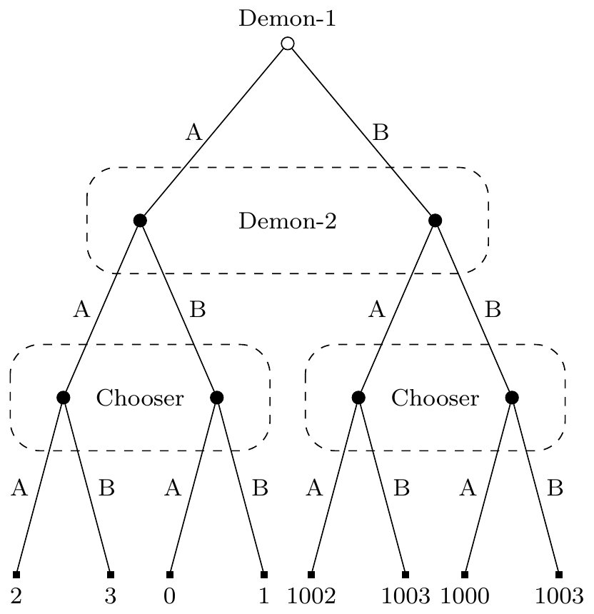

7 Dual Mandate
7.1 Introduction
This chapter marks a turning point in the book. From here on, a large amount of the time will be spent discussion situations involving dynamic choice. A central argument for GDT is that only it, or something like it, is compatible with plausible principles of dynamic choice. I’ll call the dynamic choice situations I’ll be interested in decision trees. To define them, it helps to start with an orthodox definition of a game tree.
A finite extensive form (or frame) with perfect recall consists of the following items.
- A finite rooted directed tree.1 - A set of players I = {1,…,n} and a function that assigns one player to every decision node. A set of actions A and a function that assigns one action to every directed edge, satisfying the restriction that no two edges out of the same node are assigned the same action. A set of outcomes_O_ and a function that assigns an outcome to every terminal node. For every player i \(\in\) I, a partition \(\mathfrak{D}_i\) of the set Di of decision nodes assigned to player i (thus \(\mathfrak{D}_i\) is a collection of mutually disjoint subsets of Di whose union is equal to Di). Each element of Di is called an information set of player i. (Bonanno 2018, 119)1 This is defined earlier, on page 75, but the details aren’t important to what we’re doing.
The quote continues with some restrictions on \(\mathfrak{D}_i\), but I want to pause first to say what this is supposed to represent, and then it is easy to say informally what the constraints are. This partition is an epistemic accessibility relation. If two nodes are in the same cell of the partition, then when the player is in one of them, for all they know, they are in the other. The strongest thing they know, when they are at a particular node, is that they are somewhere in that cell of the partition.
Implicitly, the assumption here is that the right accessibility relation for epistemic logic is an equivalence relation. That’s absurd in full generality. But I think in this context it’s a harmless enough idealisation. That is, it’s harmless enough if we remember that an idealisation here is a simplification, and not something that we think is desirable, or in any way something to aim for.
There are two standard restrictions on \(\mathfrak{D}_i\). First, players know what moves are possible, so for any two nodes in a cell of \(\mathfrak{D}_i\), the same actions are possible. Second, players remember their actions, so for any two nodes in a cell of \(\mathfrak{D}_i\), the paths to those nodes only differ with respect to moves made by other players.
We’re also going to make three more assumptions that are I think implicit in the standard formulation, but not always made explicit.2 Say a ‘play’ is a particular path through the tree that happens in real time. The assumptions concern what happens in all plays of a tree thus understood.
2 Bonanno does make all these explicit at various times, but doesn’t list them in one spot for neat quoting.
First, each player is motivated to get the best outcome possible. If we interpret the outcomes as preferences of the player at the end of the play, and assume that players are motivated by their current preferences, this is in effect an assumption that preferences do not change over the course of the play.
Second, the tree is common knowledge at the start of the play. A player will not acquire new capacities over the game, or learn that they had capacities they didn’t realise. They will not acquire any capacity to make distinctions between possibilities that they did not have at the start of the play. So, for instance, there can’t be a point in the tree where a player meets a new individual, and acquires by acquaintance the ability to have singular thoughts about that person, and distinguish that person from descriptive duplicates.3
3 Following Stalnaker (2008), I think this constraint means that we can’t represent the Sleeping Beauty problem as a tree, since there Beauty gains the capacity to have singular thoughts about a time, the ‘now’ when she awakes, that she did not previously have.
Third, it is common knowledge among all the time-slices of a player that all of the player’s time-slices are rational. At this stage, it’s important that ‘rational’ be left as something of a placeholder, or, perhaps better, a variable. In some sense the aim of the theorising around here is to solve for the value of ‘rational’ given some intuitive data about rational play. But whatever rationality is, we assume the player always has it, they always know they will always have it, they always know that they always know they will always have it, and so on.
A strategy for player i is a function from the members of \(\mathfrak{D}_i\) to probability distributions over actions. That is, the strategy says which action, or mixed action, a player will do at each information set that they could reach consistent with the rules of the game.
It will become important that these are extremely fine-grained. A strategy describes what a player will do at nodes that are ruled out by other choices the player makes. Consider a game that consists of two rounds of some simple two-player, two-choice game, like Prisoners’ Dilemma, with the results of the first round revealed before the second round is played. Each player has 32 strategies. (So there are 1024 strategy pairs.) The tree for the game has five information sets where each player might move; the first-round game, then, since there are four ways the first game could go, four more possibilities for what they might know when the second-round game is played. Since there are 25, i.e., 32, ways to make binary choices over five possible choices, there are 32 strategies.4
4 Some of the results of the next few chapters came from work I started investigating what happened in two-round decision problems like that. None of that work appears here, because for every result I found, I eventually found an illustration with many fewer strategies. If you’re grateful you don’t have to look at 32-by-32 strategy tables, you can’t imagine how grateful I am to not be writing them.
I’m going to assume a kind of realism about strategies. Players actually have dispositions about what they will do at nodes that aren’t reached, and even at nodes that couldn’t be reached given their prior dispositions. These dispositions are at least real enough to play the following two roles: they can be the conditions that conditional probabilities are defined over, and they are subject to evaluation as rational or irrational.
Trees in game theory textbooks frequently designate one special player: Nature (Bonanno 2018, 134ff). Nature is different in a few respects. It does not have any special outcome; the outcomes are utilities for the players other than Nature. It is usually taken to be common knowledge among the other players that they are rational; but Nature is not rational. Rather, at every node where Nature makes a move, there is an externally provided probability distribution over the possible moves. These probabilities are common knowledge at the start of the game.5
5 Though note that does not mean all players know the probability of each move at any time Nature moves. It could be that while the game is going, a player does not know precisely which node they are at, so they do not know what probability distribution Nature is using. This is common in card games. If I don’t know what’s in your hand, I don’t know what cards are left, so I don’t know whether the probability that Nature is about to give a player the Jack of Hearts is, say, 0.025, or 0.
A decision tree is like a game tree, but with more players that are distinctive in the way Nature is. There is only one player stipulated to be rational: Chooser. (They will be player 1 in what follows, unless stated otherwise.) At most one player is Nature, in the sense of the previous paragraph. The other players are all demons. If a demon moves at a node, then Chooser knows not the unconditional probability of that demon’s possible actions, but the conditional probability of the demon’s actions given their strategy choice. In more familiar terms, the demon predicts their strategy with a certain probability of accuracy, and has dispositions about what to do given each prediction.
While these demons are a lot like the demons that have been central to decision theory ever since the introduction of Newcomb’s Problem, there are two things I’m doing differently here that I want to note up front. First, there may be more than one demon. In the examples to follow, there will occasionally be four players: Chooser, two demons, and Nature. Second, the conditional probabilities are conditional on strategies, not just choices. This will matter in two stage games; to make the second stage game be just like the familiar games in decision theory (like Newcomb’s Problem), it will be important that Demon’s dispositions are sensitive to Chooser’s dispositions about the second game. And this is important even in cases (of which there will be a few below) where Chooser can choose whether to play that second-round game.
7.2 Introducing the Dual Mandate
7.2.1 Purely Strategic Approaches
One way to think about what ideal Chooser will do in a decision tree takes the notion of a strategy as primitive. The short version is that it says Chooser uses decision theory to choose a strategy, and then implements that strategy at each node.
In a finite game, there will be finitely many strategies. This finite number may be very large. The number of strategies Chooser has is the product, across each of the nodes in the tree where they choose, of the number of choices available at that node. But still, it is finite. And similarly there are finitely many strategies for each of the non-human players, and Chooser can work out the conditional probability for each such strategy given their choice of strategy. So we have a very large, but finite, game, and most decision theories on the market in philosophy will have something to say about what Chooser should do in this large game.
All that’s then left to do is to carry the strategy out. It’s perhaps a bit easier to see this in practice. And I’ll use EDT to illustrate it, because variants of CDT sometimes get complicated to apply to cases beyond binary choice.
I’ll start with a case we’ve seen before, the two stage Newcomb Problem I used earlier to argue against EDT: Table 4.4. As a reminder, the game has three players, Chooser, Demon-1, and Demon-2. And it plays out over the following four stages.
- At stage 1, Demon-1 predicts what Chooser will do at stage 4. This information is kept hidden from everyone.
- At stage 2, Demon-2 predicts what Chooser will do at stage 4. This information is also kept hidden from everyone.
- At stage 3, Demon-1’s prediction is revealed to Chooser, but Demon-2’s prediction is kept secret.
- At stage 4, Chooser chooses A or B. Chooser’s payout is a function of their choice, and the two predictions the demons make.
Because this game is a bit more complicated than the standard problems involving demons in decision theory, I need to make a few more stipulations about how demons work. These will be standard from now on in all problems unless stated otherwise.
- Each demon is arbitrarily accurate at predicting Chooser’s strategy.
- The demon’s errors are probabilistically independent, so knowing that Demon-1 has erred is no evidence that Demon-2 will err.
- If the rules say that a demon predicts the move Chooser will make at a node, what that means is they choose the move that is most probable for Chooser to make given their prediction of Chooser’s strategy, and whatever other information they have to that point.
- If n predictions are tied for being equally probable given demon’s prediction and information, that demon plays the mixed strategy of making any one prediction with probability 1/n.
The last requirement will be important here. If Chooser plays the strategy of doing whatever Demon-1 predicts, then without the last clause we can’t work out the conditional probabilities for Demon-1’s moves given Chooser’s strategy. And it was part of our definition of a decision tree that these conditional probabilities were required. The last clause implies that in that case Demon-1 will flip a coin to decide what to ‘predict’. The same happens if Chooser adopts the strategy of doing the opposite of what Demon-1 predicts.
Earlier, I represented the game as a pair of tables, repeated here as Table 7.1. In these tables, the columns are the predictions of Demon-2.
Table 7.1: A Newcomb problem with two demons.
| PA | PB | |
|---|---|---|
| A | 1 | 3 |
| B | 0 | 2 |
| PA | PB | |
|---|---|---|
| A | 1001 | 1003 |
| B | 1000 | 1002 |
Given what was said so far, we have two perhaps more perspicuous ways to represent the game. The first is visually, as a tree diagram. This is shown in Figure 7.1.